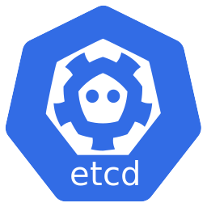
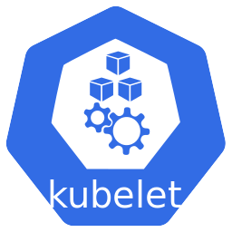

13. Kubernetes (k8s) cơ bản
/
Kiến trúc Kubernetes cluster: Control Plane, Worker Node & kubectl
Giới thiệu
Một Kubernetes cluster gồm hai phần: Control Plane (Master node) – bộ não điều phối toàn cluster, và Worker node – nơi các container thực sự chạy.
Người dùng tương tác với cluster thông qua kubectl, một công cụ dòng lệnh gửi yêu cầu đến API Server.
Trên môi trường quản lý sẵn như EKS, Control Plane do AWS vận hành và bạn chỉ lo các Worker node.
Mô hình kiến trúc tổng quan
flowchart TB
Kubectl["

kubectl
(command line tool)"]
subgraph CP["Control Plane (Master node)"]
API["🔌 API Server
entrypoint của cluster"]
Sched["🗓️ Scheduler
phân phối Pod về node"]
CM["🎛️ Controller Manager
theo dõi hoạt động cluster"]
ETCD["

etcd
lưu trữ key:value"]
end
subgraph WN1["Worker node 1"]
K1["

kubelet"]
P1["

Pod"]
KP1["🌐 kube-proxy"]
RT1["📦 container runtime"]
end
subgraph WN2["Worker node 2"]
K2["
kubelet"]
P2["
Pod"]
KP2["🌐 kube-proxy"]
RT2["📦 container runtime"]
end
Kubectl -->|"gửi yêu cầu (kubectl apply / get...)"| API
API --> ETCD
API --> Sched
API --> CM
API -.-> K1
API -.-> K2
K1 --> P1
K1 --> RT1
K2 --> P2
K2 --> RT2
kubectl gửi yêu cầu tới API Server. Scheduler chọn node cho Pod, Controller Manager giữ trạng thái đúng với mong muốn, etcd lưu toàn bộ dữ liệu cluster. kubelet trên mỗi worker node nhận lệnh và nhờ container runtime chạy Pod.
Các thành phần của Control Plane
- API Server (kube-apiserver): entrypoint duy nhất của cluster. Mọi lệnh kubectl hay component nội bộ đều đi qua đây; nó xác thực và ghi trạng thái vào etcd.
- etcd: kho lưu trữ dạng key:value, lưu toàn bộ cấu hình và trạng thái cluster, đảm bảo tính nhất quán. Đây là "nguồn chân lý" của cluster.
- Scheduler: đảm bảo việc phân phối Pod – quan sát các Pod mới chưa có node, chọn worker node phù hợp (đủ CPU/RAM, đúng ràng buộc) rồi gán Pod vào node đó.
- Controller Manager: theo dõi tất cả hoạt động đang diễn ra trên cluster và liên tục điều chỉnh để trạng thái thực tế khớp trạng thái mong muốn (ví dụ: Pod chết thì tạo Pod mới).
- Cloud Controller Manager (tuỳ chọn): giao tiếp với cloud provider (AWS...) để tạo LoadBalancer, volume, route.
Các thành phần của Worker node
- kubelet: agent chạy trên mỗi worker node, nhận lệnh từ Control Plane và đảm bảo các container trong Pod chạy đúng như khai báo.
- kube-proxy: phụ trách quản lý network communication – áp dụng các rule mạng để traffic đến Service được chuyển tới đúng Pod.
- Container runtime: phần mềm thực sự chạy container, ví dụ containerd, CRI-O, hoặc Docker Engine.
- Pod: đơn vị nhỏ nhất được triển khai, chứa một hoặc nhiều container (sẽ học chi tiết ở chương sau).
kubectl – công cụ tương tác với cluster
kubectl là command line tool để giao tiếp với API Server. Bạn có thể thao tác với mọi resource của cluster bằng kubectl:
kubectl run my-hello-kube --image=nginx
kubectl get services
kubectl describe nodes my-node
kubectl apply -f myconfig.yaml
- Imperative (ra lệnh trực tiếp):
kubectl run, kubectl expose, kubectl delete... nhanh nhưng khó lặp lại.
- Declarative (khai báo qua file):
kubectl apply -f file.yaml – khai báo trạng thái mong muốn trong YAML rồi apply; đây là cách dùng chuẩn trong thực tế.
💡 kubectl đọc cấu hình kết nối cluster từ file ~/.kube/config (trên Windows: C:\Users\<user>\.kube\config). Một máy có thể kết nối nhiều cluster và chuyển đổi bằng kubectl config use-context.
Thông tin bổ sung
- High Availability: để cluster production không bị "single point of failure", Control Plane thường chạy nhiều bản sao (3 master, etcd cluster). Minikube chỉ có 1 node duy nhất cho cả Control Plane lẫn Worker.
- Trên EKS: AWS vận hành Control Plane (API Server, etcd, Scheduler...) với độ sẵn sàng cao và tự cập nhật; bạn chỉ cần quản lý Worker node (EC2) hoặc dùng Fargate để "không node".
- Xem thành phần hệ thống:
kubectl get pods -n kube-system liệt kê các Pod chạy Control Plane / addon trên cluster.
- Lưu ý: đừng nhầm "Master node" với "Worker node" – Control Plane chạy logic điều phối, còn ứng dụng của bạn chạy trên Worker node.